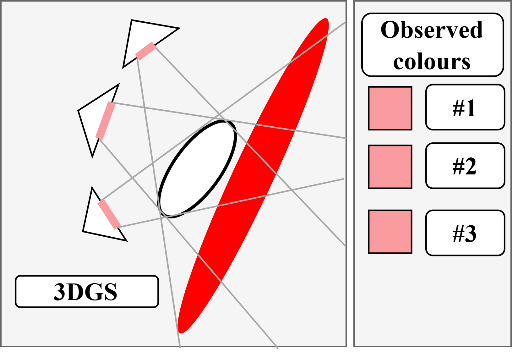
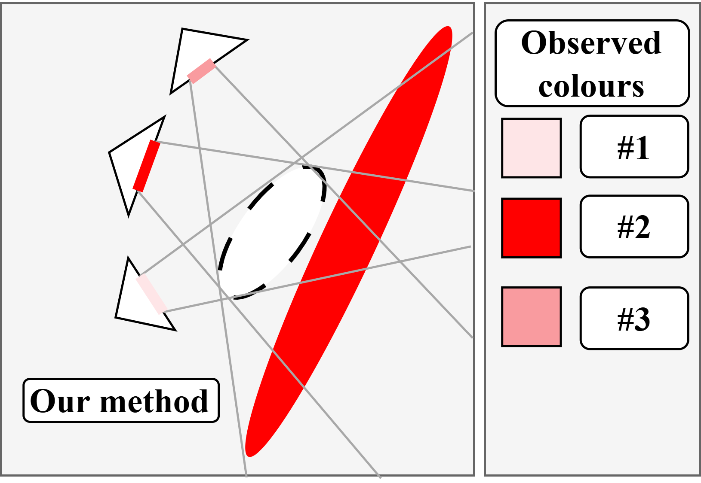

View-Dependent Opacity
Replace the scalar opacity with a quadratic function of viewing direction ω:
α̂i(ω) = σ(γi + ωT Ŝi ω)
Each Gaussian gets a learnable 3×3 symmetric matrix Ŝi — six parameters — plus the usual scalar bias γi. From a diffuse angle, Ŝ contributes little; from a glancing specular angle, it can suppress or boost the Gaussian decisively. The sigmoid keeps everything in [0, 1].


Scalar vs. view-dependent opacity. A white Gaussian in front of a red one, seen from three cameras. With scalar opacity (left) every camera sees the same pink blend. With view-dependent opacity (right) the front Gaussian fades out for camera 2, which sees the red surface behind it, while camera 1 still sees it almost opaque. The quadratic form ωTŜω is equivalent to spherical harmonics of degrees 0 and 2 (full derivation in the paper), so the expressive power matches an SH deg-2 opacity. The symmetric-matrix parameterization with an explicit bias term is just easier to optimize — validated in the paper’s ablations.